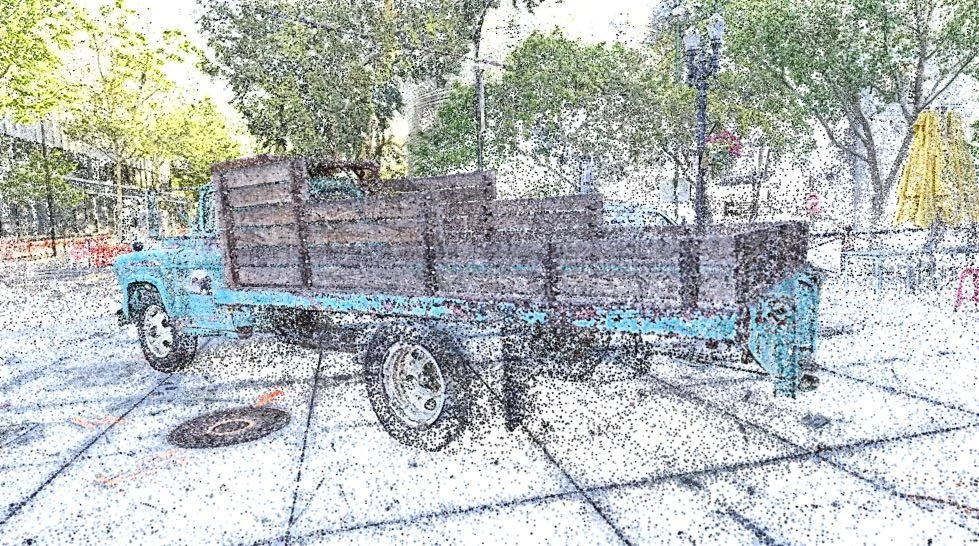
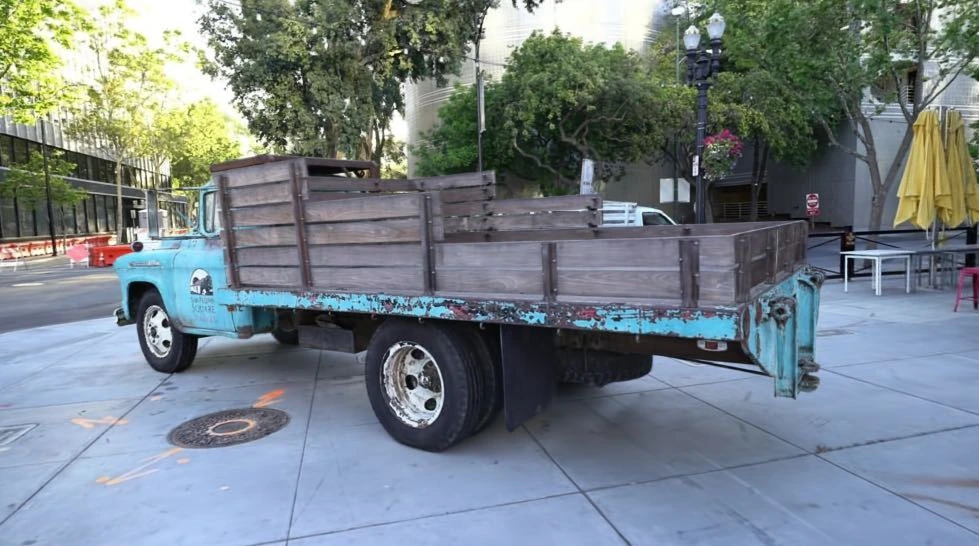
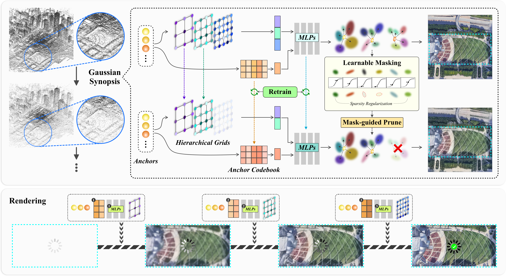
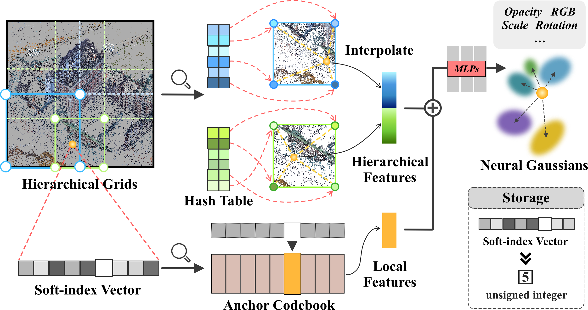
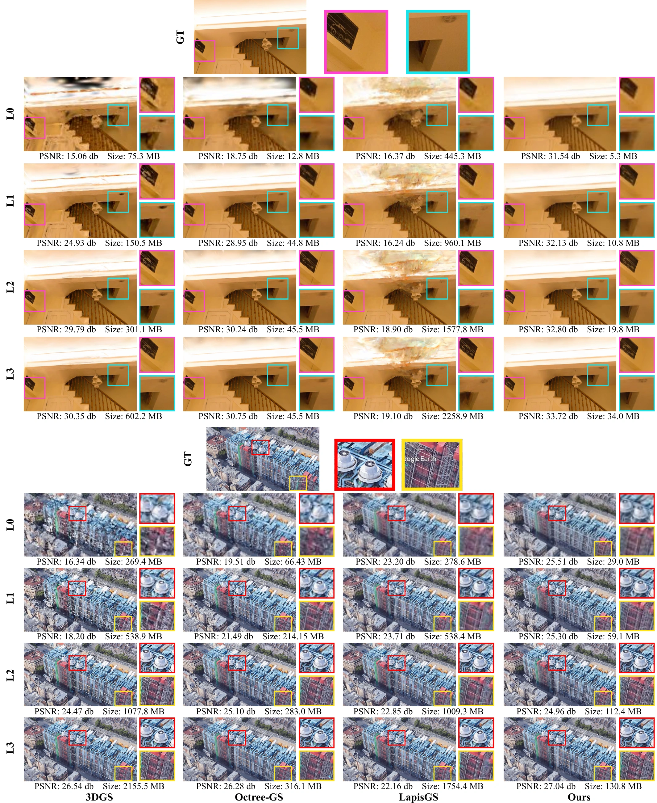

Hierarchical representation
Multi-resolution hash grids encode global scene context, while a shared Anchor Codebook represents local features. Compact MLPs decode these features into Gaussian attributes.

THE REPRESENTATION
L3 / Full detailLOD visualization. Gaussian structure and rendered views at four LODs. The model is condensed from L3 to L0 during training; progressive rendering proceeds from L0 to L3.
Pre-rendered results at each level’s target resolution.
3D Gaussian Splatting (3DGS) has become a state-of-the-art framework for real-time, high-fidelity novel view synthesis. However, its substantial storage requirements and inherently unstructured representation pose challenges for deployment in streaming and resource-constrained environments. Existing Level-of-Detail (LOD) strategies, particularly those based on bottom-up construction, often introduce redundancy or lead to fidelity degradation.
To overcome these limitations, we propose Iterative Gaussian Synopsis, a novel framework for compact and progressive rendering through a top-down “unfolding” scheme. Our approach begins with a full-resolution 3DGS model and iteratively derives coarser LODs using an adaptive, learnable mask-based pruning mechanism. This process constructs a multi-level hierarchy that preserves visual quality while improving efficiency.
We integrate hierarchical spatial grids, which capture the global scene structure, with a shared Anchor Codebook that models localized details. This combination produces a compact yet expressive feature representation, designed to minimize redundancy and support efficient, level-specific adaptation. The unfolding mechanism promotes inter-layer reusability and requires only minimal data overhead for progressive refinement.
Experiments show that our method maintains high rendering quality across all LODs while achieving substantial storage reduction. These results demonstrate the practicality and scalability of our approach for real-time 3DGS rendering in bandwidth- and memory-constrained scenarios.
Iterative Gaussian Synopsis constructs a four-level hierarchy through top-down, mask-guided pruning of a full-fidelity anchor-based representation.

Multi-resolution hash grids encode global scene context, while a shared Anchor Codebook represents local features. Compact MLPs decode these features into Gaussian attributes.
Starting from the finest level, learnable masks and group sparsity regularization prune Gaussians and entire anchors. Coarser levels retain a subset of the hierarchical grids.
Coherent Basis Modulation adapts the shared codebook, and Level-aware Decoding fine-tunes the fusion and attribute-prediction MLPs for each LOD.

Comparison with 3DGS, Octree-GS, and LapisGS across four datasets and four levels of detail.
| Method | PSNR ↑dB | SSIM ↑ | LPIPS ↓ | Speed ↑FPS | Size ↓MB |
|---|---|---|---|---|---|
| 3DGS | 26.86 | 0.793 | 0.226 | 107 | 795.26 |
| Octree-GS | 27.10 | 0.791 | 0.230 | 114 | 103.61 |
| LapisGS | 26.19 | 0.748 | 0.278 | 70 | 1740.10 |
| Ours Iterative Gaussian Synopsis | 27.17 | 0.790 | 0.224 | 118 | 90.11 |
Model size ratio (3DGS / Ours): 8.8×
Mip-NeRF360 · L3 · 90.11 MB · 118 FPSEvaluation uses held-out test views. All methods are evaluated at each level’s proportionally scaled target resolution; quality metrics should be compared within the same level. 3DGS and LapisGS sizes use their uncompressed explicit Gaussian representations. Baselines are reproduced under the paper’s evaluation settings; Octree-GS uses a fixed four-level configuration. See the paper for full protocols and incremental payloads.
Qualitative comparisons on indoor and large-scale scenes. Each row compares the same level of detail across methods, with close-up regions and per-scene quality and storage figures.

@article{lu2026unfolding,
title={Unfolding 3D Gaussian Splatting via Iterative Gaussian Synopsis},
author={Lu, Yuqin and Zhou, Yang and Dai, Yihua and Li, Guiqing and He, Shengfeng},
journal={arXiv preprint arXiv:2604.11685},
year={2026}
}